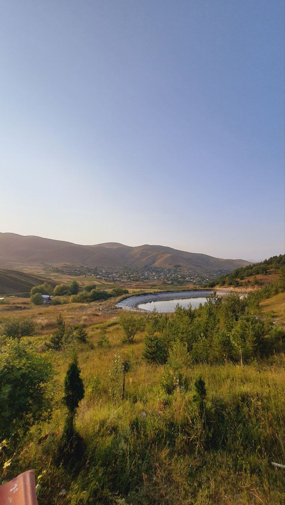
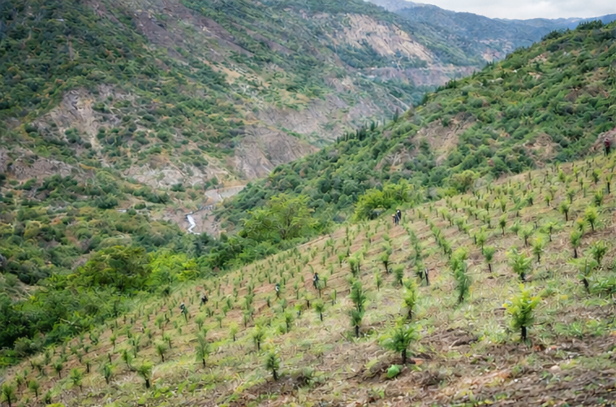
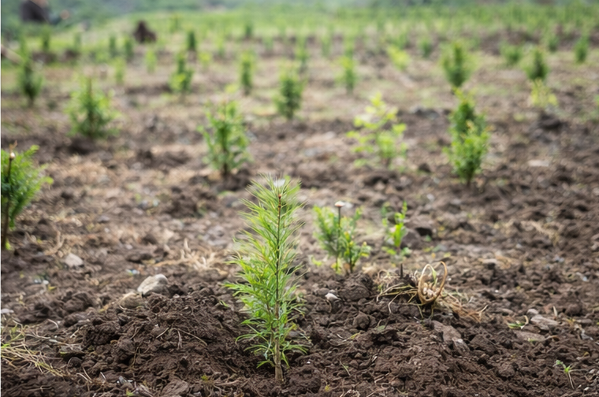
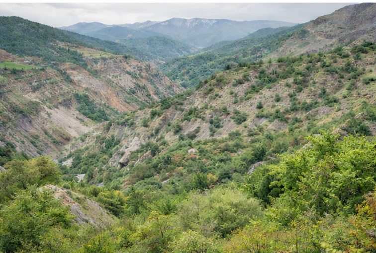
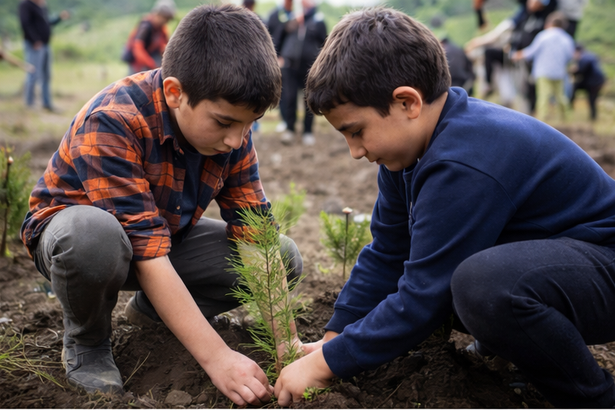
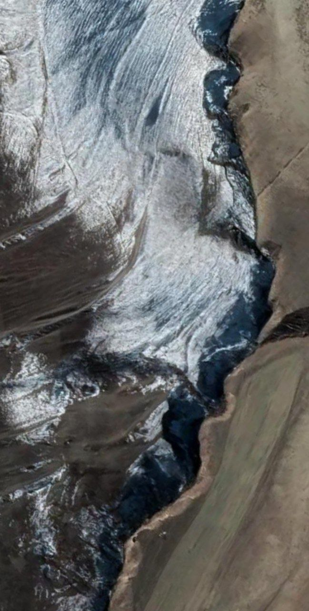

Hello, my name is Tsolak. I’m Mazmanyan Tsolak, a passionate advocate for nature and sustainability. I’m reaching out to the Youth Biodiversity Network to introduce myself and share an exciting project I’m deeply committed to. I come from a background rooted in a strong appreciation for the environment and the urgent need to protect our natural ecosystems. With the growing threats to biodiversity and the accelerating impacts of climate change, I believe it’s our responsibility to take meaningful action—starting locally but thinking globally. That’s why I’m planning to plant trees across a 2-3 hectare area in my region. The project "ANI" is not just about planting trees, but about restoring ecosystems, creating habitats for wildlife, and inspiring my community—especially young people—to reconnect with nature and take ownership of our shared environment.
Also ANI is a sustainable hospitality project focused on creating cozy guest houses that exist in harmony with nature. The project is designed for people who seek quiet, authenticity, and a deep connection with the natural environment, without sacrificing comfort and quality. ANI guest houses are located in natural landscapes and built with a strong respect for the land. The architecture is simple, warm, and functional, using natural materials and energy-efficient solutions. Each space is carefully planned to blend into its surroundings rather than dominate them, allowing guests to feel part of nature from the moment they arrive. The project promotes slow travel and responsible tourism. ANI encourages guests to disconnect from urban stress, enjoy fresh air, local food, and peaceful surroundings, and experience the rhythm of nature. At the same time, the project supports local communities by creating jobs and working with local suppliers, craftsmen, and farmers. Sustainability is a core value of ANI. Water management, minimal environmental impact, and thoughtful land use are integral parts of the concept. ANI is not just a place to stay — it is an experience that combines rest, nature, and responsibility, offering guests a meaningful and memorable way to reconnect with themselves and the world around them

ANI is a tree restoration initiative dedicated to healing degraded landscapes and rebuilding healthy, resilient ecosystems. The project focuses on restoring native forests through thoughtful, long-term approaches that respect natural processes and local biodiversity. At the core of ANI is the planting and protection of native tree species suited to the climate and soil of each region. Rather than relying on monoculture planting, the project promotes diversity, ensuring stronger ecosystems that can better withstand climate stress, pests, and changing environmental conditions. Each restoration site is carefully assessed to support natural regeneration alongside active planting. ANI goes beyond planting trees. Soil recovery, water management, and erosion control are essential components of the restoration process. By improving soil health and increasing water retention, the project creates conditions in which trees can grow sustainably and support surrounding plant and animal life. Over time, restored areas become self-sustaining forest systems. Community involvement is a key element of ANI. The project works with local residents, volunteers, and land stewards, providing education and hands-on training in sustainable land management. This approach strengthens local ownership and ensures long-term care of restored landscapes.
ANI restores Armenia’s landscapes through large-scale tree planting, strengthening ecosystems, stabilizing soil, and transforming degraded land into healthy, resilient forests.
By restoring vegetation cover, ANI actively reduces erosion and landslide risks in vulnerable regions, protecting both natural ecosystems and surrounding communities.
Education is central to ANI’s mission, teaching younger generations responsible forest management, biodiversity awareness, and long-term environmental stewardship through practical experience.
By combining ecological restoration with education, ANI builds resilient landscapes and empowers a new generation to protect Armenia’s forests for decades ahead.
Проект АНИ создан в целях исследования окружающей среды, в частности лесов и земель. Команда АНИ вот уже 2 года сажает деревья разных сортов в деградирующих участках, уделяя особое внимание восстановлению экосистем и естественного баланса природы. В основе проекта лежит научный и практический подход. Перед началом работ команда изучает состояние почв, уровень деградации, водный баланс и климатические особенности территории. Это позволяет подбирать виды деревьев, которые лучше всего адаптированы к конкретным условиям и способны не только выжить, но и запустить процессы естественного восстановления земли. Особый акцент делается на посадку местных и устойчивых пород, которые укрепляют почву, удерживают влагу и создают среду для возвращения других растений и животных. Проект АНИ рассматривает лес не просто как совокупность деревьев, а как живую систему. Поэтому посадка деревьев сопровождается мерами по защите почвы от эрозии, улучшению водоудержания и поддержке биоразнообразия. Со временем такие участки начинают самостоятельно восстанавливаться, превращаясь в устойчивые природные зоны. Важной частью проекта является работа с людьми. Команда АНИ привлекает волонтёров, местных жителей и специалистов, делясь знаниями о бережном отношении к земле и долгосрочном управлении природными ресурсами. Это формирует ответственное отношение к окружающей среде и усиливает эффект проекта.

The ANI project was created with the goal of researching the environment, particularly forests and land. For the past two years, the ANI team has been planting trees of various species in degraded areas, focusing on ecosystem restoration and the recovery of natural balance. The project is based on both scientific and practical approaches. Before starting any work, the team studies soil conditions, levels of degradation, water balance, and the climatic characteristics of each area. This makes it possible to select tree species that are best adapted to local conditions and capable not only of surviving but also of initiating natural land restoration processes. Special emphasis is placed on planting native and resilient species that strengthen the soil, retain moisture, and create conditions for the return of other plants and wildlife. The ANI project views forests not simply as a collection of trees, but as living systems. Therefore, tree planting is accompanied by measures to protect soil from erosion, improve water retention, and support biodiversity. Over time, these areas begin to recover naturally, transforming into stable and self-sustaining natural zones. Community involvement is an important part of the project. The ANI team engages volunteers, local residents, and specialists, sharing knowledge about responsible land stewardship and long-term natural resource management. This approach fosters environmental awareness and strengthens the long-term impact of the project. ANI is an investment in the future, aimed at restoring forests, protecting land, and creating resilient ecosystems for future generations.
ANI նախագիծը ստեղծվել է շրջակա միջավայրի ուսումնասիրության նպատակով, մասնավորապես՝ անտառների և հողերի։ Վերջին երկու տարիների ընթացքում ANI-ի թիմը տարբեր տեսակների ծառեր է տնկում դեգրադացված տարածքներում՝ կենտրոնանալով էկոհամակարգերի վերականգնման և բնական հավասարակշռության վերագտման վրա։ Նախագիծը հիմնված է գիտական և գործնական մոտեցումների վրա։ Աշխատանքների մեկնարկից առաջ թիմը ուսումնասիրում է հողի վիճակը, դեգրադացման աստիճանը, ջրային հաշվեկշիռը և տարածքի կլիմայական առանձնահատկությունները։ Սա հնարավորություն է տալիս ընտրել այն ծառատեսակները, որոնք առավել հարմար են տվյալ պայմաններին և կարող են ոչ միայն գոյատևել, այլև խթանել հողի բնական վերականգնման գործընթացները։ Առանձնահատուկ ուշադրություն է դարձվում տեղական և կայուն տեսակների տնկմանը, որոնք ամրացնում են հողը, պահպանում խոնավությունը և ստեղծում պայմաններ բույսերի ու կենդանիների վերադարձի համար։ ANI նախագիծը անտառը դիտարկում է ոչ թե պարզապես որպես ծառերի համախումբ, այլ որպես կենդանի համակարգ։ Այդ պատճառով ծառատունկը ուղեկցվում է հողի էրոզիայից պաշտպանության, ջրի պահման բարելավման և կենսաբազմազանության աջակցության միջոցառումներով։ Ժամանակի ընթացքում նման տարածքները սկսում են ինքնուրույն վերականգնվել՝ վերածվելով կայուն և ինքնաբավ բնական գոտիների։ Նախագծի կարևոր բաղադրիչ է համայնքի մասնակցությունը։ ANI-ի թիմը ներգրավում է կամավորների, տեղական բնակիչների և մասնագետների՝ տարածելով գիտելիքներ հողի պատասխանատու կառավարման և բնական ռեսուրսների երկարաժամկետ պահպանման վերաբերյալ։ Այս մոտեցումը ձևավորում է շրջակա միջավայրի նկատմամբ գիտակցված վերաբերմունք և ուժեղացնում նախագծի երկարաժամկետ ազդեցությունը։
ANI (Armenian Nature Initiative) is a long-term environmental project dedicated to restoring and protecting Armenia’s natural landscapes. The initiative focuses on large-scale tree planting to revive degraded lands, strengthen ecosystems, and reshape damaged environments into healthy, living forests. By stabilizing soil and restoring vegetation cover, ANI actively works to combat erosion and reduce the risks of landslides in vulnerable regions. Beyond physical restoration, ANI places strong emphasis on education and future stewardship. A core part of the project is teaching the younger generation how to responsibly manage forests, understand biodiversity, and develop a long-term connection with nature. Through hands-on activities, training programs, and community involvement, ANI empowers youth with practical knowledge and environmental values. By combining ecological restoration with education, ANI aims to create resilient landscapes and a new generation capable of protecting Armenia’s forests for decades to come.

ANI has planted over 600 trees across fragile landscapes.A growing community observing and protecting changing natural landscapes.
.png)
We teach youth sustainable soil management and erosion prevention.Educating younger generations to plant trees in diverse conditions.
.png)
ANI combines tree planting, education, and landscape monitoring.Building knowledge to restore land and protect ecosystems.